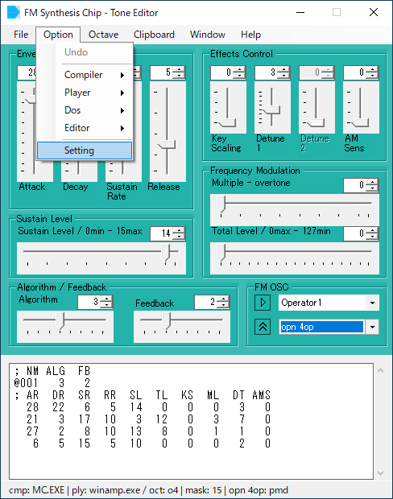
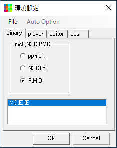
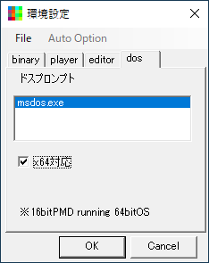
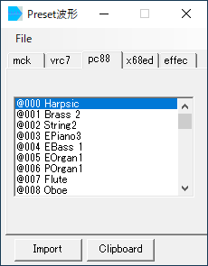
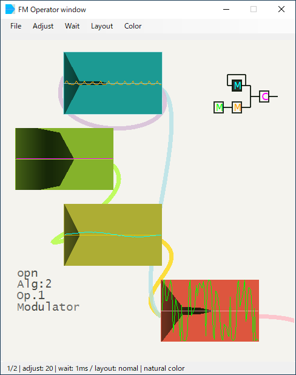
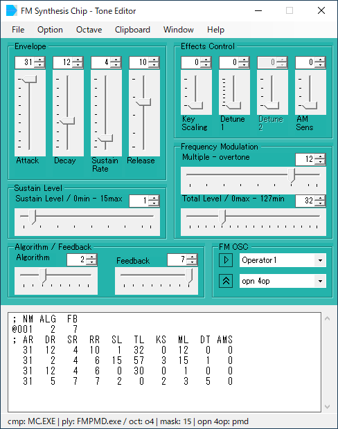

|  |
fm_editor.exeを起動します。 本体パネルのOptionからSettingを選択します。 |
|  |
環境設定パネルから、 binaryタブのラジオボタンからPMDを選択、 "MC.EXE"をリストボックスへDrug&Dropで登録します。 同じくplayerタブをクリックし、 "FMPMD.exe"を登録します。 |
|  |
dosタブをクリックし、 "msdos.exe"を登録します。 PMDは16bit appなので、x64対応にチェックを入れ、 環境設定を閉じます。 |
|  |
本体パネルのメニューにある、FileからPresetを選択し、Preset波形ウィンドウを開きます。 pc88タブを選択します。 リストボックス内の"@000"などをクリック、これで音が出れば、環境設定がうまくいってます。 続けて、Preset波形ウィンドウの"Import"ボタンを押すと、本体にpresetデータが読み込まれます。 |
|  |
本体パネルのメニューにある、 window - FM OP windowをクリック、 Operator windowが開きます。 インポートしたエンベロープと波形が表示されます。 |
|  |
本体パネルの、Frequency Modulationにある、 Multiple - overtoneのスライダーを、 左右に動かして見て下さい。 Operator windowの表示が、変化します。 聞いて確認するときは、再生ボタン(or スペースキー)を押します。 基本的な手順は、この繰り返しです。 |
| index> quick> FM Synthesis Chip - Tone Editor |
2021 04coreworks
|